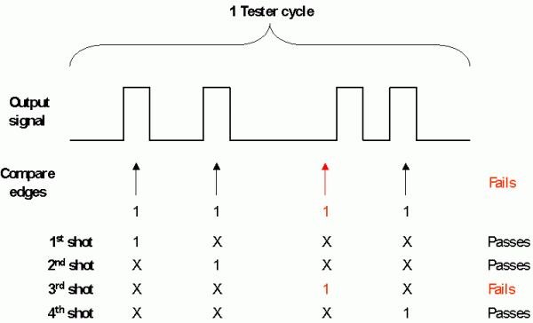

Retrieving edge information by repeating the test
On the Pin Scale Digital Cards, you can record a separate result for each of the available receive edges by setting the result granularity parameter to 8 (see Result granularity). However, you can only retrieve 1 bit results (see Resolution of the error code) in this way.
In spite of this, the result queries CYCI?, EARD?, EMAP?, and ERMP? can retrieve 2 bit edge information. They achieve this by executing additional shots when (a) results are recorded on the cycle level only, and (b) the test has failed. A shot is a test execution where, for each of a number of pins, all receive edges except one are masked. If a cycle fails for one of these pins when executing such a shot, then it must have failed because the only unmasked edge of this pin has failed. The following figure illustrates the principle:

The shot concept requires that masking a receive edge of a pin does not alter the test results for any other receive edge of the same or another pin. But this is not ensured if the test contains a match loop (see Match loops). For if you mask a receive edge of a pin that contributes to the outcome of the match loop, then a match could be found although the respective edge still fails and the loop should actually be repeated. But then the device may be in a different state after the match loop, which could lead to different test results.
Accordingly, you cannot use shots to obtain edge information on pins that take part in a match loop. But then you must be able to inform SmarTest for which pins edge information is to be retrieved. This is done with the CYRM command. Edge information will be reported only for those pins for which CYRM has been set to EDGE.
Furthermore, shots are only executed if 2 bit codes and a result granularity of 1 have been required with DCRM.
Finally, there are devices which do not tolerate multiple shots. To prevent execution of shots in such a case, you can use the CYRP command. This command determines if multiple shots are allowed. If they are not allowed, execution of a functional test will not be possible if retrieval of edge information is activated for at least one pin with CYRM and the result granularity is set to cycle level with DCRM 1,PFC.
To summarize, the result queries will execute shots if and only if the following conditions are satisfied:
- CYRM is set to EDGE.
- DCRM is set to 1,PFC.
- CYRP is set to MULT (this is the default).
- EMAP? or ERMP? are called with the EDGE option, CYCI? is called with the CYRM option.
Note that EMAP? and ERMP? do not return the 2 bit codes that are recorded when executing the shots, but convert them to 1 bit codes. CYCI? and EARD?, on the other hand, translate the 2 bit code into a character that fully conveys the information of the code.